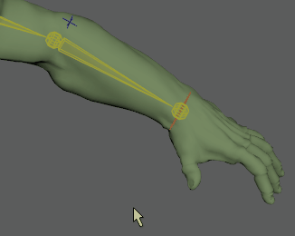

虽然存在 IK 控制柄的动画曲线和关键帧信息，但没有 IK 关节的信息，因为其位置是由 IK 控制柄上的动画确定的。若要查看和编辑 IK 关节的动画信息，请执行烘焙动画。
设置“烘焙模拟选项”(Bake Simulation Options)
- 选择要烘焙的关键帧或关键帧集。
- 选择(Key > Bake Animation) >
 。
。
- 在烘焙模拟选项(Bake Simulation Options)窗口中，执行以下操作之一：
- 单击“烘焙”(Bake)，以设定“烘焙模拟”(Bake Simulation)选项并烘焙当前关键帧或关键帧集。
将关闭“烘焙模拟选项”(Bake Simulation Options)窗口。
- 单击“应用”(Apply)，以设定“烘焙模拟”(Bake Simulation)选项并烘焙当前关键帧或关键帧集。
此时“烘焙模拟选项”(Bake Simulation Options)窗口将保持打开状态。
- 单击“关闭”(Close)放弃对“烘焙模拟”(Bake Simulation)选项所做的任何更改，并关闭“烘焙模拟选项”(Bake Simulation Options)窗口。
- 单击“烘焙”(Bake)，以设定“烘焙模拟”(Bake Simulation)选项并烘焙当前关键帧或关键帧集。
通过烘焙为 IK 关节创建关键帧
- 选择 IK 关节。
- 选择(Key > Bake Animation) > 。
在烘焙模拟选项(Bake Simulation Options)窗口中，设置“采样频率”(Sample By)值。
- 确认“禁用隐式控制”(Disable Implicit Controls)选项处于启用状态，以保留由 IK 链中的第一个关节所表达的动画。
- 单击“烘焙”(Bake)按钮。
Maya 将单步执行整个动画过程。它将针对“采样频率”(Sample By)字段中指定的每个时间间隔对场景进行解算，并在每个时间放置一个关键帧。新的关键帧将显示在时间滑块中。注： 如果烘焙全身 IK 系统的动画，必须确保骨架的属性可设置关键帧。若要使骨架可设置关键帧，请选择骨架的根关节并打开“通道盒”(Channel Box)。亮显所有的属性并单击鼠标右键。从标记菜单中选择“使选定项可设置关键帧”(Make Selected Keyable)。
烘焙关键帧集
- 选择要烘焙的关键帧集。
- 选择(Key > Bake Animation)。
在“曲线图编辑器”(Graph Editor)中烘焙动画
如果您想编辑单个动画曲线，而非影响单个属性行为的所有起作用的属性，例如受到受驱动关键帧或表达式影响的对象，则可以在曲线图编辑器(Graph Editor)中烘焙动画。
在动画通道上烘焙关键帧时，将在曲线的每个帧上设置关键帧。
在“曲线图编辑器”(Graph Editor)中
确保要烘焙的所有动画均显示在图表视图中，然后从“曲线图编辑器”(Graph Editor)的“曲线”(Curves)菜单中选择“曲线 > 烘焙通道”(Curves > Bake Channel)。
在“摄影表”(Dope Sheet)中烘焙动画
使用摄影表编辑器(Dope Sheet Editor)中的“烘焙通道”(Bake Channel)为受驱动关键帧创建动画通道
- 从场景视图或“大纲视图”(Outliner)选择受驱动对象。
- 在“摄影表”(Dope Sheet)的“通道”(Channel)菜单窗口中，选择“烘焙通道”(Bake Channel) > 以打开烘焙通道选项(Bake Channel Options)。
- 选择“时间滑块”(Time Slider)，以烘焙位于“时间滑块”(Time Slider)的“播放开始”(Playback Start)和“播放结束”(Playback End)时间之间的区域中的关键帧。
- 选择“开始/结束”(Start/End)，通过在“开始时间”(Start Time)和“结束时间”(End Time)字段中输入值来指定范围。
- 选择“选择”(Selection)，以烘焙由所选关键帧定义的范围内的关键帧。
注： 这些选项对于“摄影表”(Dope Sheet)和“曲线图编辑器”(Graph Editor)是相同的，但“选择”(Selection)除外，此选项仅为“摄影表编辑器”(Dope Sheet Editor)提供。

烘焙通道：使用“摄影表”(Dope Sheet)中的“选择”(Selection)选项
- 在“采样频率”(Sample By)字段中输入值。
“采样频率”(Sample By)值基于“时间单位”(Time Unit)设置。该值代表 Maya 分析对象的动画和生成关键帧的频率。值为 1 时将在每个时间单位为其创建一个关键帧。较高的值会降低生成关键帧的频率，而较低的值会提高创建的关键帧的数量。
- 单击“烘焙”(Bake)。
注： “烘焙通道”(Bake Channel)仅对可显式解算的动画进行操作。不能将“烘焙通道”(Bake Channel)用于反向运动学系统、动力学和一些表达式。